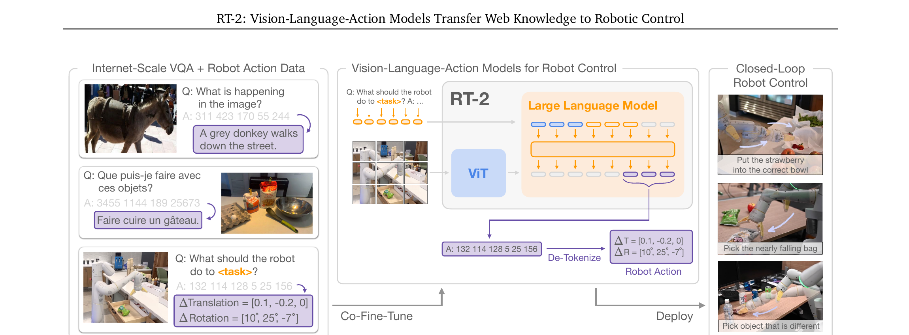
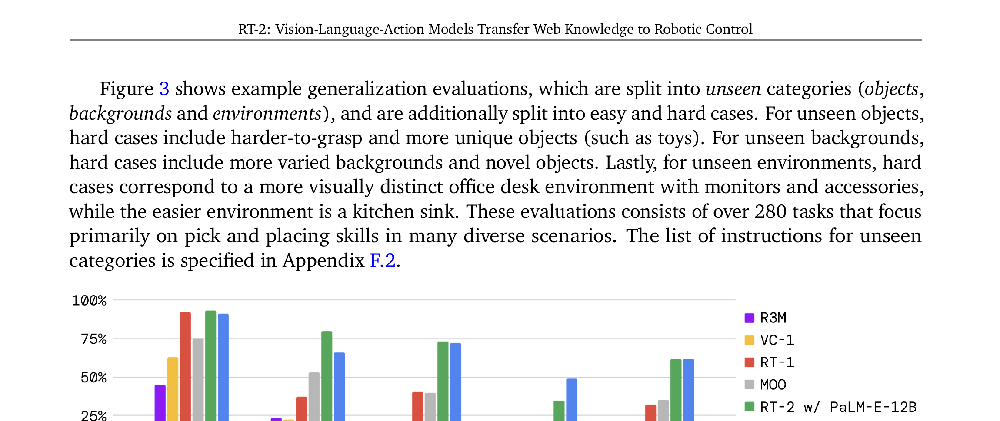
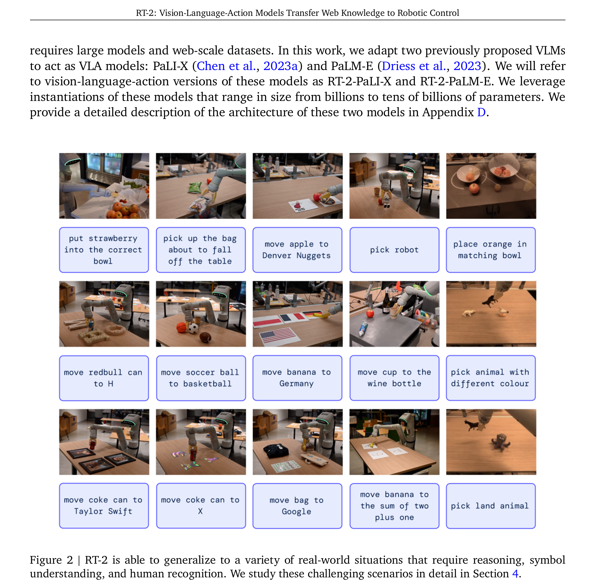
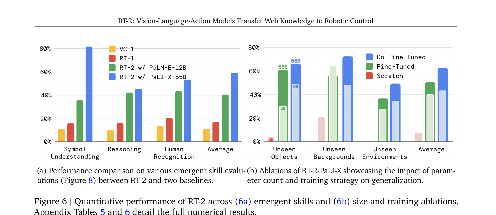
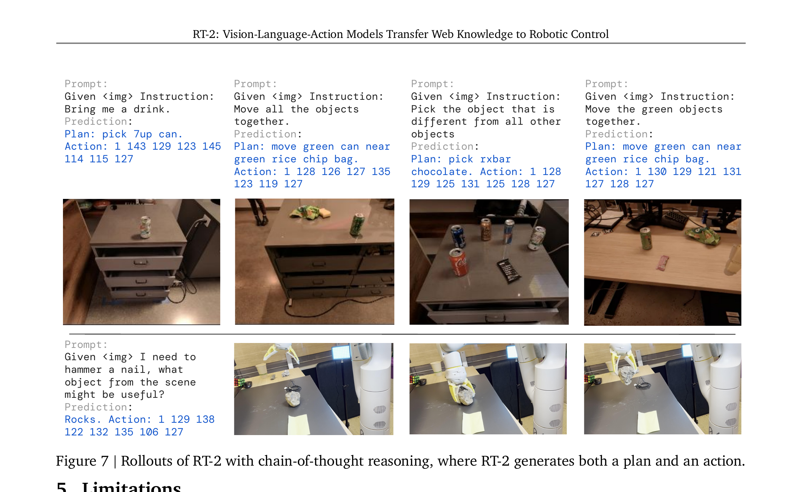

RT-2: Vision-Language-Action Models Transfer Web Knowledge to Robotic Control
一句话总结
RT-2 第一次证明了一个惊人的简单想法：把大规模视觉-语言模型（PaLI-X 55B / PaLM-E 12B）直接微调，让它输出的"文字"不是自然语言，而是机器人动作的离散编码。就这么一改，模型就能直接控制机器人——而且继承了 VLM 从数十亿网页学到的语义理解、推理、甚至数学能力。
类比：如果 VLM 是一个读过全世界书的大脑，RT-2 的贡献是给这个大脑接上了手——让"理解世界"的能力直接变成"操控世界"的能力。

核心思路
上一节看到了 RT-2 的全貌。现在拆开看它的核心洞察——其实就三句话：(1) VLM 已经会看图说话了；(2) 机器人动作可以写成一串数字；(3) 那就让 VLM "说"动作数字就行了。
2.1 VLM → VLA：从说话到做事
展开原文 · 核心 insight
"We explore an approach that is both simple and surprisingly effective: we directly train vision-language models designed for open-vocabulary visual question answering and visual dialogue to output low-level robot actions, along with solving other Internet-scale vision-language tasks."
2023 年之前，把 VLM 用在机器人上的主流思路是分层：VLM 做高层规划（"先拿杯子"），低层控制器做执行。问题是：低层控制器没有 Internet 预训练的语义先验，泛化能力差。
RT-2 的革命性在于：取消分层，直接端到端。VLM 不只是"大脑"，它同时也是"脊髓"——直接输出低层 Cartesian 动作。
2.2 动作 = Token
机器人动作空间：6DoF 末端位移 + 夹爪开合 + 终止信号 = 8 维。每个连续维度被均匀切成 256 个 bin。这样一个动作就变成 8 个整数，比如 "1 128 91 241 5 101 127"。
PaLI-X：整数 0-999 各有自己的 token（vocabulary 里已有），所以 action bin 直接映射到对应整数 token。
PaLM-E：没有现成的整数 token。解法和后来的 OpenVLA 一样——覆盖 vocabulary 中最不常用的 256 个 token。
动作字符串拼接格式："terminate Δpos_x Δpos_y Δpos_z Δrot_x Δrot_y Δrot_z gripper_extension"
2.3 Co-Fine-Tuning · 最重要的训练决定
如果只用 robot 数据微调 VLM，模型会灾难性遗忘——忘掉从 Internet 学到的语义知识。RT-2 的解法是共同微调：每个 batch 同时包含 web VQA 数据和 robot 动作数据，通过增大 robot 数据的采样权重来平衡。
展开原文 · Co-fine-tuning
"A key technical detail of the training recipe that improves robot performance is co-fine-tuning robotics data with the original web data instead of naïve finetuning on robot data only. We notice that co-fine-tuning leads to more generalizable policies since the policies are exposed to both abstract visual concepts from web scale data and low level robot actions during fine-tuning."
架构与训练
上一节讲了三个核心决定：VLM 直接输出动作、动作离散化为 token、用 co-fine-tuning 保留 Internet 知识。这一节看具体用了哪些 VLM、训练细节、以及怎么做到实时推理。
3.1 两个 VLM 骨干
| RT-2-PaLI-X | RT-2-PaLM-E | |
| 基座 VLM | PaLI-X（Google，闭源） | PaLM-E（Google，闭源） |
| 参数量 | 5B / 55B | 12B |
| 视觉编码器 | ViT-22B | ViT-4B |
| 语言模型 | UL2 32B | PaLM 8B |
| 预训练数据 | 主要视觉 VQA/Caption | 混合 VQA + 语言 + 代码 |
| Action token 映射 | 整数直接映射 (0-999 已有 token) | 覆盖最不常用的 256 个 token |
| 泛化强项 | 符号理解、人类识别 | 数学推理（得益于 PaLM 语言能力） |
3.2 动作离散化
维度：6DoF 末端位移（Δx, Δy, Δz, Δroll, Δpitch, Δyaw）+ 夹爪开合 + 终止指令
离散化：每维 256 bin，均匀分割
输出格式："terminate Δpos_x Δpos_y Δpos_z Δrot_x Δrot_y Δrot_z gripper"
示例："1 128 91 241 5 101 127"（terminate=1 表示继续执行）
3.3 输出约束 · Output Constraint
VLM 本来可以输出任意文本。但当 prompt 是 robot 任务格式时（"Q: what action should the robot take to [task]? A:"），必须确保输出只从 256 个动作 token 中采样。实现方式：在 decoding 时 mask 掉非动作 token 的 logits。
3.4 实时推理
55B 模型无法在机器人本地 GPU 上运行。RT-2 的解法：部署在多 TPU 云服务上，机器人通过网络请求动作。
频率：RT-2-PaLI-X-55B → 1-3 Hz；RT-2-PaLI-X-5B → ~5 Hz。足以控制 Google 的移动操作机器人（非高频灵巧操作）。
泛化实验
RT-2 的核心主张不是"能控制机器人"（RT-1 早就能），而是VLM 的 Internet 预训练带来了更强的泛化能力。这一节看 6000 次评测的结果：seen tasks、unseen objects/backgrounds/environments。
4.1 Seen Tasks · 和 RT-1 打平
在训练时见过的 200+ 任务上，RT-2 和 RT-1（35M 参数，从头训练）表现接近。这说明 VLM 预训练不损害已见任务的性能——但也没有明显提升。
4.2 Unseen 泛化 · RT-2 碾压

RT-2 vs baseline 的差距在 unseen 场景下最大。这精确证明了论文的核心主张：Internet 预训练带来的泛化能力可以直接迁移到机器人控制。不是让机器人学更多的 task，而是让它学更强的 representation。
涌现能力
上一节看到 RT-2 在 unseen 物体/背景/环境上泛化更好——这还算"预期之内"。但接下来的发现才是 RT-2 真正震撼学界的地方：模型展现出了robot 数据中从未出现过的能力。这些能力纯粹来自 Internet 预训练——作者称之为涌现能力。

5.1 符号理解 · Symbol Understanding
指令："move apple to 3"——robot 训练数据中从未出现过数字概念。但 RT-2 能把苹果放到写有数字 3 的位置，因为 VLM 从 Internet 学过"3 长什么样"。
更惊人的："place orange in matching bowl"——模型理解颜色匹配的概念，把橙色水果放进橙色碗里。
5.2 推理 · Reasoning
指令："move banana to the sum of two plus one"——模型先"算出"答案是 3，然后把香蕉移到数字 3 的位置。这个推理过程来自 PaLM 的数学能力（PaLM-E 版在数学推理上更强）。
其他推理示例："move the apple to the cup with the same color"（颜色推理）、"mueve la manzana al vaso verde"（多语言理解）。
5.3 人类识别 · Human Recognition
指令："move the coke can to the person with glasses"——模型需要 (1) 识别场景中戴眼镜的人，(2) 把可乐移到那个方向。robot 数据中从未有过"识别人类属性"的任务。

消融实验
前面看到 RT-2 效果好，但是因为模型大？因为 co-fine-tuning？还是因为 VLM 预训练？这一节的消融实验精确回答了这些问题。
6.1 模型大小的影响
PaLI-X-55B vs PaLI-X-5B：55B 在 unseen 泛化上一致更好，但差距不算巨大。关键不在大小，而在有没有 VLM 预训练——从头训练的 5B 几乎完全失败。
6.2 Co-Fine-Tuning vs Fine-Tuning vs Scratch
Chain-of-Thought
前面看到 RT-2 已经能做推理任务（"move to the sum of two plus one"）。但那是 implicit reasoning——模型内部隐式推理。这一节 RT-2 团队尝试了显式推理：让模型先输出一段自然语言"计划"（Plan），再输出动作 token（Action）。

训练数据增强：在动作数据中加入 "Plan" 字段。例如：
Instruction: I'm hungry. → Plan: pick rxbar chocolate. Action: 1 128 124 136 121 158 111 255.
只需要微调几百步，模型就能学会先输出计划再输出动作。
这个实验虽然是初步探索，但它暗示了一个重要方向：VLA 可以同时做高层规划和低层控制，在一个统一的模型中。这正是后来 SayCan → PaLM-E → π₀.₇ 的 diverse prompting 所延续的思路。
局限性 & RT-2 → OpenVLA → π₀
RT-2 是 VLA 的开山之作，但它也有明显的结构性局限——每一个都催生了后续工作的改进方向。
8.2 RT-2 → OpenVLA → π₀ 的演进
| RT-2 (2023) | OpenVLA (2024) | π₀ (2024) | |
| 核心贡献 | 证明 VLM→VLA 可行 | 开源 + fine-tuning 生态 | 连续动作 + 灵巧操作 |
| 参数量 | 55B (闭源) | 7B (开源) | 3B+860M (部分开源) |
| 动作表示 | 离散 token | 离散 token | 连续 (Flow Matching) |
| Co-fine-tuning | ✅ VLM 预训练 + robot | ❌ 只用 robot 微调 | ✅ 两阶段 (discrete pre + flow post) |
| 语义泛化 | 最强（co-FT 保留 Internet 知识） | 弱于 RT-2（无 co-FT） | 中等（PaliGemma 底子） |
| 灵巧操作 | ❌ 只能 pick-and-place | ❌ 只能 pick-and-place | ✅ 折叠、擦桌、双臂 |
| 可部署性 | ❌ 需要 TPU 云 | ✅ 单 GPU + 量化 | ✅ 优化推理 |
到这里，你已经理解了 VLA 的完整技术演进：
RT-2（提出 VLM→VLA 范式 + co-fine-tuning）→ OpenVLA（开源化 + fine-tuning 最佳实践）→ π₀ 系列（Flow Matching 连续动作 + 灵巧操作 + diverse prompting）。
三篇论文是同一条技术主线的三个阶段：概念验证 → 开源平民化 → 性能突破。